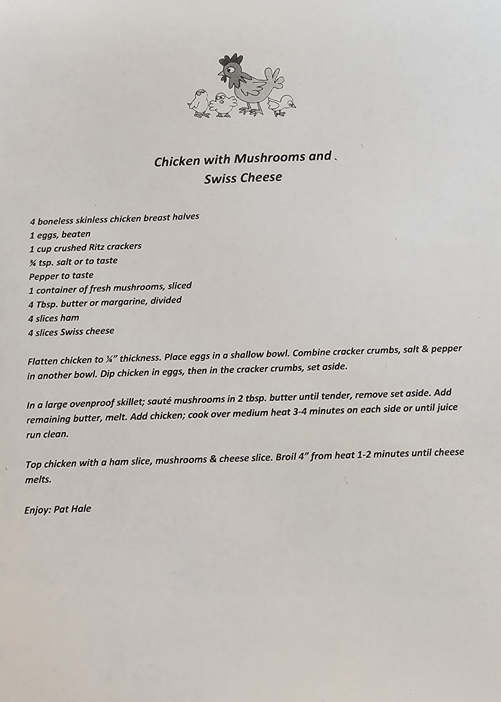

Ingredients:
- 4 boneless skinless chicken breast halves
- 1 egg, beaten
- 1 cup crushed ritz crackers
- 3/4 tsp salt to taste
- pepper to tast
- 1 container of fresh mushrooms, sliced
- 4 tbsp butter
- 4 slices of ham
- 4 slices of swiss cheese
Instructions:
- Flatten chicken to 1/4 thickness and place eggs in a shallow bowl
- Combine cracker crumbs, salt, and pepper in another bowl
- Dip the chicken in eggs, then in the cracker crumbs and set aside
- In a large ovenproof skillet, saute the mushrooms in 2 tbsp butter until tender, remove and set aside
- Add the remaining butter, melt and add chicken. Cook over medium heat for 3-4 minutes on each side.
- Top the chicken with a slice of ham, mushrooms and cheese slices, then broil for 1-2 minutes until cheese melts
